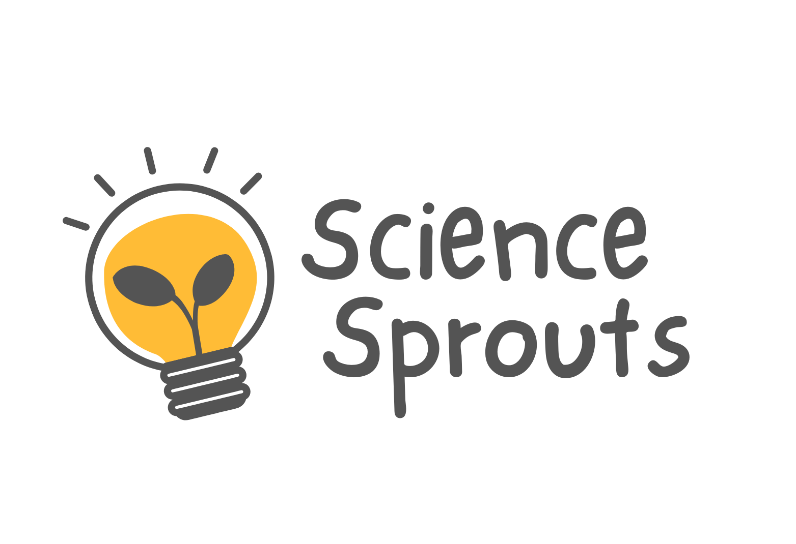

01
Exploring the Origins of Scientific Literacy
This longitudinal study tracks children from ages 3 to 12 to examine how early individual differences in interests, causal reasoning skills, and home environment shape the development of scientific literacy and engagement.
